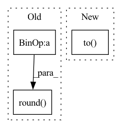

Pattern ID :2811
Before Change
if fix_to == "center":
use_center = torch.round( self["center"].value/ self.target.pixelscale) *self.target.pixelscale
elif fix_to == "pixel":
align = self.target.pixel_center_alignment()
use_center = (align + torch.round(self["center"].value/self.target.pixelscale - align))*self.target.pixelscaleAfter Change
else:
raise ValueError(f"integrate_window fix_to should be one of: center, pixel. not {fix_to}")
window_align = torch.isclose((((use_center - image.origin)/image.pixelscale) % 1), torch.tensor(0.5, dtype = AP_config.ap_dtype, device = AP_config.ap_device), atol = 0.25)
use_shape = ((self.integrate_window_size + 1 - (self.integrate_window_size % 2) + 1 - window_align.to(dtype = torch.int32) )*self.target.pixelscale)
return Window(center = use_center, shape = use_shape)
@classmethodIn pattern: SUPERPATTERN
Frequency: 3
Non-data size: 3
Instances Fragment ID: 11239241
Project Name: connorstoneastro/autoprof
Commit Name: 4adf6ac648a9c8950a344fe3b13e866cb0c381be
Time: 2023-01-10
Author: connorstone628@gmail.com
File Name: autoprof/models/_model_methods.py
M Class Name: AnonimousClass
N Class Name: AnonimousClass
M Method Name: integrate_window(3)
N Method Name: integrate_window(2)
M Parent Class:
N Parent Class:
M File Name: autoprof/models/_model_methods.py
N File Name: autoprof/models/_model_methods.py
M Start Line: 14
M End Line: 23
N Start Line: 9
N End Line: 22
Before Change
ratio = torch.min(new_shape[0] / im_shape[0], new_shape[1] / im_shape[1])
ratio_h = torch.round( im_shape[0] * ratio) .to(dtype=torch.int32)
ratio_w = torch.round(im_shape[1] * ratio).to(dtype=torch.int32)
if torchvision._is_tracing():After Change
scale_factor: Optional[float] = None
min_size = torch.min(im_shape).to(dtype=torch.float32)
max_size = torch.max(im_shape).to(dtype=torch.float32)
scale = torch.min(self_min_size / min_size, self_max_size / max_size)
if torchvision._is_tracing(): Fragment ID: 11239240
Project Name: zhiqwang/yolov5-rt-stack
Commit Name: 1fea1a60c2517c2130d038af9d25a89f5a278873
Time: 2022-02-07
Author: zhiqwang@foxmail.com
File Name: yolort/models/transform.py
M Class Name: AnonimousClass
N Class Name: AnonimousClass
M Method Name: _resize_image_and_masks(4)
N Method Name: _resize_image_and_masks(3)
M Parent Class:
N Parent Class:
M File Name: yolort/models/transform.py
N File Name: yolort/models/transform.py
M Start Line: 59
M End Line: 75
N Start Line: 67
N End Line: 86
Before Change
)
bpe, bpe_lens = bpe.to(params.device), bpe_lens.to(params.device)
abs_length = torch.round( bpe_lens * bpe.shape[1])
// Append eos token at the end of the label sequences
bpe_with_eos = append_eos_token(
bpe, length=abs_length, eos_index=params.eos_indexAfter Change
def compute_objectives(self, predictions, batch, stage):
Computes the loss given predictions and targets.
tokens_eos = batch["tokens_eos"].to(self.device)
tokens_len = batch["tokens_len"].to( self.device)
// convert to speechbrain-style relative length
rel_length = (tokens_len + 1) / tokens_eos.shape[1]
loss = self.hparams.compute_cost( Fragment ID: 11239250
Project Name: speechbrain/speechbrain
Commit Name: 37cd9e704357d544eb54e43ce4e4e86f96ac89a0
Time: 2021-01-10
Author: jzhong9@u.rochester.edu
File Name: recipes/LibriSpeech/LM/experiment.py
M Class Name: LM
N Class Name: LM
M Method Name: compute_objectives(4)
N Method Name: compute_objectives(4)
M Parent Class: sb.core.Brain
N Parent Class: sb.core.Brain
M File Name: recipes/LibriSpeech/LM/experiment.py
N File Name: recipes/LibriSpeech/LM/experiment.py
M Start Line: 61
M End Line: 80
N Start Line: 27
N End Line: 36